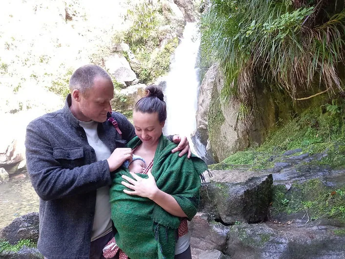

Empowerment for Mothers & Families
About me
Becoming the Change: A Journey Through Feeling, Responsibility, and Culture-Shifting Motherhood.

I’m Hannah Abouzahrah — a mother, possibility coach, and cultural midwife.
I support women and families through the sacred and messy thresholds of parenting, pregnancy, birth, and miscarriage.
I walk with you not as an expert above, but as a companion beside — someone who believes deeply in your innate wisdom and the village we are meant to grow.
Why I Do This Work
“I take my next steps for healing and feeling. In this way, I can break the cycle of generations and create the spaciousness within myself, necessary to allow children to unfold their beings.”
My work is rooted in the belief that true change begins within. I support others because I’ve walked through my own thresholds—academic achievement, disillusionment, rebirth through motherhood, and the discovery that deep feeling is a doorway to personal and cultural transformation.
A Journey That Changed Its Course
I hold an MSc from the University of Edinburgh in Global Environment, Politics and Society, and a BA in French Studies. While I once vowed never to return to academic writing, this particular path felt like a full-body YES. My studies opened questions that led me far beyond the page - into the heart of how change truly happens.
In the final stretch of writing my dissertation, I was shaken by the avoidance and blame present in my interview findings.
And then, something clicked.
A powerful, embodied realisation swept through me:
If I wanted to impact the world, I had to start by taking radical responsibility for my inner landscape.
“Be the change you wish to see in the world” became not a quote—but a calling.
From Academia to Embodiment
I followed this insight into my body - deepening my yoga practice and becoming an instructor. This led me from Scotland to New Zealand, where a new chapter began.
In Golden Bay, I met my daughter’s father and encountered the life-changing work of Possibility Management through Expand the Box training. This framework gave me the missing link I had long been searching for - the direct connection between feelings and culture.
Entering the Work of Feeling
With renewed purpose, I immersed myself in this transformative path:
-
Organising and attending Expand the Box and Possibility Labs
-
Training in Emotional Healing Processes
-
Participating in Trainer Skills and Possibility Coaching Training
-
Supporting others in remembering their own inner resources
Becoming a Mother; Midwifing Culture
In 2022, I stepped away from formal trainings to prepare for a new initiation: motherhood.
My daughter, Evelyn Irene, was born under the Wainui stars at Tui Community.
Her arrival marked a rebirth in me too—a deepened commitment to living, parenting, and relating outside the nuclear family model passed down from generation to generation.
From there, my family joined others in communal living experiments—seeking ways to co-parent, share resources, and hold space for children together.

Returning to the Work
Motherhood led me back into offering what I love most:
Coaching & emotional healing processes
xxxxxxx
xxxxxxxxxxxxxxxxxxxxxxxxxxxxxxxxxxxxxxxxxxxxxxxxxxxxxxxxxxxxxxxxxxxxxxxxxxxxxxxxxxxxxxxxxxxxxxxxxxxxxxxxxxxxxxxxxxxxxxxxxxxxxxxxxxxxxxxxxxxxxxxxxxxxxxxxxxxxxxx
Specialising in miscarriage, pregnancy, freebirth, parenting & anger work
xxxxxxx
xxxxxxxxxxxxxxxxxxxxxxxxxxxxxxxxxxxxxxxxxxxxxxxxxxxxxxxxxxxxxxxxxxxxxxxxxxxxxxxxxxxxxxxxxxxxxxxxxxxxxxxxxxxxxxxxxxxxxxxxxxxxxxxxxxxxxxxxxxxxxxxxxxxxxxxxxxxxxxx
Holding space for others to heal, grow, and reclaim their inner authority
xxxxxxx
xxxxxxxxxxxxxxxxxxxxxxxxxxxxxxxxxxxxxxxxxxxxxxxxxxxxxxxxxxxxxxxxxxxxxxxxxxxxxxxxxxxxxxxxxxxxxxxxxxxxxxxxxxxxxxxxxxxxxxxxxxxxxxxxxxxxxxxxxxxxxxxxxxxxxxxxxxxxxxx
In 2024, my daughter’s father and I began co-parenting in separate homes while continuing to experiment with conscious familyhood. Our journey remains rooted in care, presence, discovery and exploration.
What’s Growing Now
I continue to experiment with alternative models of parenting, family, and learning.
I'm welcoming another co-parent, Annika Korsten, into our unfolding story who is currently on her own conscious pregnancy journey in Switzerland.
Together with other families, I'm co-dreaming a children’s learning centre and exploring new ways of living in community.
My Invitation to You
My story isn’t finished—and neither is yours.
Whether you’re navigating motherhood, grief, birth, or conscious parenting, I’m here to walk beside you.
Let’s meet the unknown together, with honesty, clarity, and heart.
“Yesterday I was clever, so I wanted to change the world. Today I am wise, so I am changing myself.” – Rumi